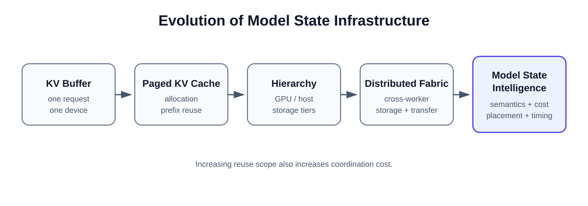
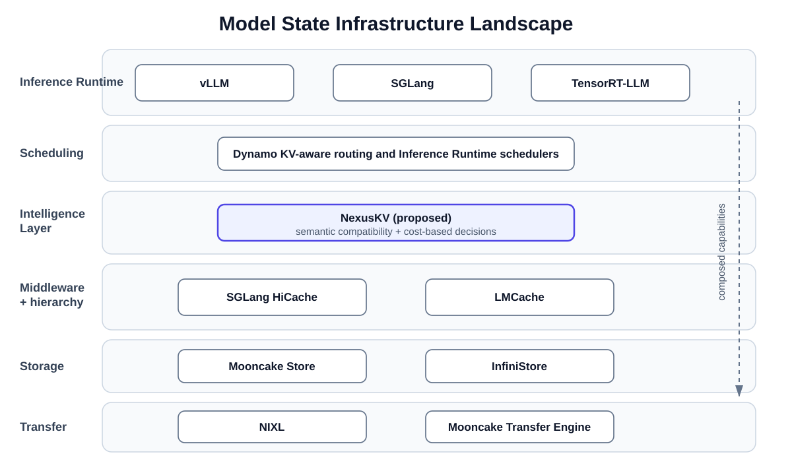
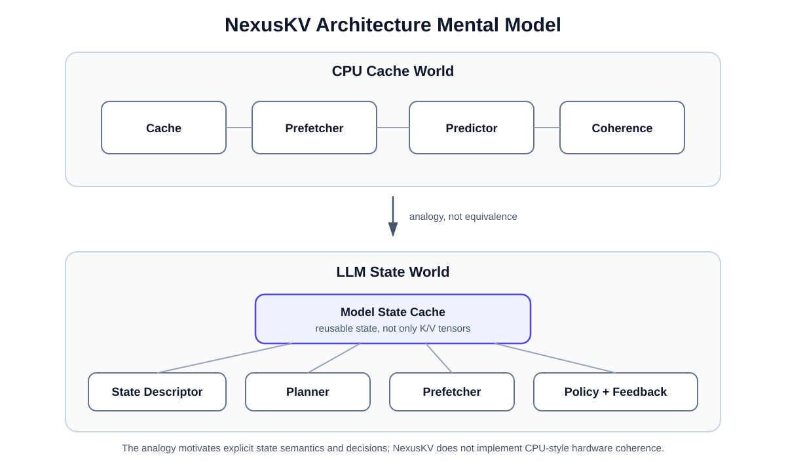
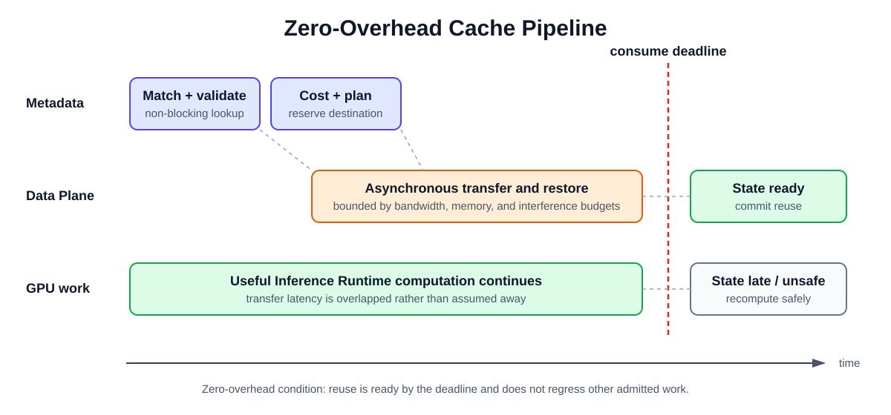
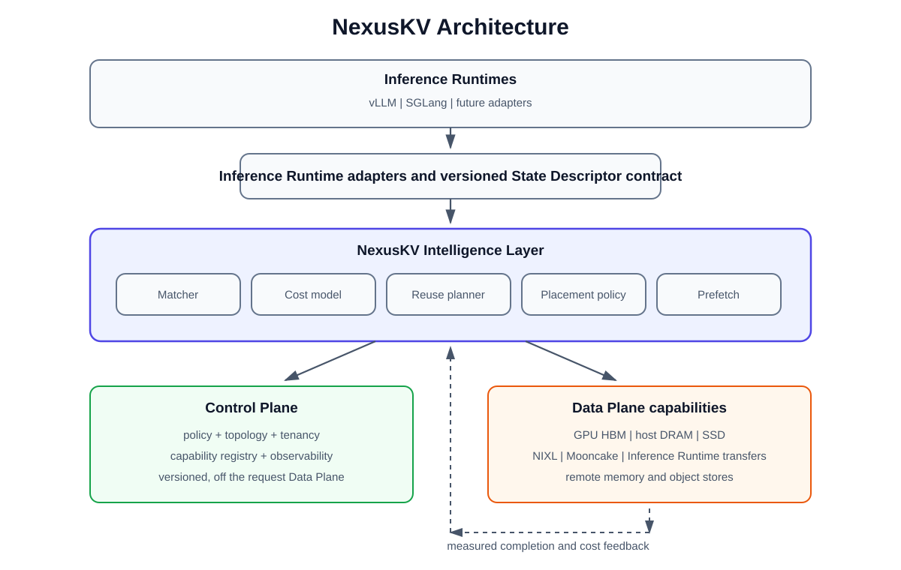

Beyond KV Cache
Toward a Zero-Overhead Model State Intelligence Layer for LLM Inference
NexusKV Whitepaper v1.1 · Architecture whitepaper · August 2026
Scope: Model State Infrastructure for large language model inference
Executive Summary
Modern LLM inference is turning the KV Cache from a request-local buffer into a shared systems resource. Longer contexts, repeated agent histories, prefill/decode disaggregation, and multi-tier memory create reuse opportunities that span requests, workers, and storage domains.
Existing projects address distinct parts of this transition:
| System | Primary contribution in this paper's scope |
|---|---|
| vLLM | Inference Runtime-local paged allocation and prefix reuse |
| SGLang and HiCache | Prefix-aware scheduling and hierarchical retention |
| LMCache | External cache lifecycle and middleware integration |
| Mooncake | Distributed storage and high-bandwidth Model State movement |
These mechanisms provide allocation, hierarchy, lifecycle, capacity, and transfer. They do not by themselves answer four cross-layer questions:
- What state is semantically safe to cache and restore?
- When is reuse more useful than recomputation?
- Where should the state reside under capacity and workload pressure?
- Should the system move the state, route work toward it, or recompute it?
NexusKV is proposed as a Model State Intelligence Layer for those decisions. Its scope is State Identity, Reuse Intelligence, cost-based planning, asynchronous prefetch, and Model State Awareness across attention architectures. It composes with Inference Runtimes, storage systems, and transfer libraries; it does not replace them. The zero-overhead objective is a measurable target in which useful cache work remains outside the request's critical path, not a performance claim already established by the current implementation.
Why Now
Context Explosion
Long-context serving turns Model State into a capacity and movement problem, not only an allocator problem. Public model releases now explicitly target the million-token context regime. At that scale, repeatedly computing or moving every cached token can dominate TTFT, memory pressure, and admission decisions. A useful cache policy must compare the reusable extent with its transfer and recomputation alternatives.
Agent Workloads
Agent requests repeatedly incorporate system prompts, tool schemas, retrieved documents, tool results, and multi-turn execution history. Some state is shared across requests; some is valid only for one tenant, branch, model revision, or checkpoint lineage. The system needs an identity contract that distinguishes a similar history from state that is safe to materialize.
Disaggregated Inference
Prefill/decode separation places the producer and consumer of a KV Cache on different workers. Architectures such as DistServe and Mooncake make routing and Model State movement explicit dependencies of scheduling. A remote match is useful only when routing or transfer completes more cheaply than recomputation without overloading the selected worker or link.
New Attention Architectures
MHA, MLA, DSA, and KDA expose different serving states. Conventional K/V pages, compressed latent state, selector-dependent regions, and recurrent terminal checkpoints do not share one compatibility or restoration rule. Cache identity must therefore describe the attention-specific materialization contract rather than assuming a uniform pair of tensors.
Heterogeneous Memory
Inference deployments increasingly compose several capacity tiers:
Each lower tier may add capacity while also adding queueing, transfer, registration, synchronization, and failure costs. Hierarchy creates an optimization surface; it does not determine which state deserves promotion or whether a request should wait for it.
These trends converge in 2026: more state is potentially reusable, but its representation, location, and time-to-use are less uniform. This paper argues that a separate decision boundary is now useful if it remains composable with the systems that execute, store, and move the state.
Non-goals
NexusKV is not intended to be:
- another KV database or general-purpose object store;
- another Inference Runtime;
- a replacement for vLLM, SGLang, or their schedulers and allocators;
- a transport framework such as NIXL;
- a storage backend such as Mooncake Store.
Those systems retain ownership of model execution, physical capacity, or byte movement. NexusKV focuses on decision intelligence: State Identity, reuse admission, cost-based placement and transfer planning, bounded asynchronous prefetch, and deterministic fallback to recomputation.
Implementation Status
This status describes the repository as of August 2026. It distinguishes
executable software boundaries from stubs and architecture proposals; it is not
a production-readiness claim. Detailed evidence is maintained in
docs/architecture/migration-status.md.
Component ownership and API boundaries are maintained in
docs/design/nexuskv-architecture.md.
Implemented
- A versioned shared contract and generated Rust/Python types for State Descriptors, planner identities, tier metadata, payload handles, and transfer session metadata.
- Rust state validation, exact and longest-prefix matching, partial-hit planning, and a bounded Host DRAM payload store.
- A Python-to-Rust planner bridge, lifecycle-aware SGLang and vLLM connector surfaces, and a deterministic execution boundary for materialize, prefetch, store, skip, and recompute actions.
- A capability-aware backend catalog, baseline in-memory execution, structured fallback, and staged-copy or remote-store stubs. The stubs expose metadata and intent; they do not perform production data movement.
- A Go Control Plane scaffold plus a versioned execution-policy contract, validated file handoff, last-known-good reload behavior, and backend capability overlays.
In Progress
- A richer cost-based reuse planner with admission, quota, interference, and uncertainty inputs beyond the current deterministic match/execution boundary.
- A benchmark framework that records end-to-end Effective Gain, fallbacks, competing traffic, and raw artifacts rather than isolated hit rate.
- Runtime integration and conformance work against pinned SGLang and vLLM versions; the current connector surfaces are not production certification.
- Non-stub backend execution and topology calibration behind the existing payload and transfer-session contracts.
Future
- Native GPU-memory materialization and reservation integration while the Inference Runtime retains allocator ownership.
- RDMA, GPUDirect, and validated lower-copy transfer backends.
- Distributed metadata, leases, recovery, multi-tenant isolation, and production deployment controls.
- Verified MLA, DSA, and KDA materialization contracts and conversions.
- A distributed Model State fabric composed from replaceable Data Plane systems.
Abstract
Key-value (KV) state has evolved from a private buffer inside an Inference Runtime into a resource that may be reused across requests, memory tiers, workers, and disaggregated prefill/decode clusters. Existing systems address different parts of this evolution: vLLM manages paged device memory, SGLang combines radix-based prefix reuse with hierarchical caching, LMCache provides a cache middleware and lifecycle layer, and Mooncake supplies a distributed storage and transfer Data Plane. These systems demonstrate that capacity and movement are necessary, but neither a cache hit nor a completed transfer guarantees an end-to-end improvement.
This paper studies the problem as Model State Infrastructure, not as a survey of every inference optimization. It formally separates Cache State, Reuse Decision, Placement Decision, and Transfer Decision; defines the visible cost of reuse; and gives an optimization objective that maximizes useful reuse rather than raw hit rate. The analysis identifies a missing coordination layer that can describe state semantics, reject incompatible reuse, compare transfer with recomputation, and schedule movement outside the critical path.
NexusKV is proposed as that Intelligence Layer. Its target is a zero-overhead operating condition in which cache management consumes resources but adds no latency to the request's critical path. The architecture generalizes from conventional multi-head attention KV tensors to Model State produced by multi-head latent, sparse, and recurrent attention. This document presents the architecture and an evaluation methodology; it does not claim that the target condition has already been demonstrated by the current implementation.
Contents
- Executive Summary
- Why Now
- Non-goals
- Implementation Status
- 1. Introduction
- 2. Problem Formulation
- 3. Model State Infrastructure Landscape
- 4. Existing Systems
- 5. Why Existing Systems Are Not Enough
- 6. Design Principles
- 7. Zero-Overhead Cache Architecture
- 8. Beyond KV Cache: Model State Cache
- 9. NexusKV Architecture
- 10. Evaluation Methodology
- 11. Limitations and Future Work
- 12. Related Work
- 13. Conclusion
- References
1. Introduction
Autoregressive inference avoids repeatedly computing attention keys and values for preceding tokens by retaining them in a KV Cache. The original abstraction was local:
Longer contexts and shared workloads changed both the size and the lifetime of that state. Multi-turn conversations revisit earlier prefixes; retrieval and agent workloads reuse documents and tool histories; prefill/decode disaggregation moves state between workers; and a cluster may expose GPU HBM, host DRAM, local SSD, remote memory, and object storage as candidate tiers. Meanwhile, newer model architectures no longer produce one uniform pair of K/V tensors at every layer.
The resulting system problem is not simply how to store more bytes. It is how to determine whether a particular state is correct and profitable to reuse, where it should reside, when it should move, and what should happen when the predicted reuse does not materialize.
This paper argues that these decisions require a layer above allocation, storage, and transport: a Model State Intelligence Layer. The intended relationship is compositional. An Inference Runtime continues to execute the model; a storage system continues to own capacity and persistence; a transfer library continues to move buffers; and the Intelligence Layer coordinates those capabilities using Model State semantics and measured cost.
1.1 Scope
The scope of this paper is Model State Infrastructure:
- state identity and compatibility;
- local and distributed cache reuse;
- memory and storage hierarchy;
- state placement and transfer;
- cache-aware request scheduling;
- cost estimation, admission, prefetch, and fallback.
The paper does not attempt to cover all inference optimizations. Kernel fusion, weight quantization, speculative decoding, model parallelism, and batching are discussed only when they change the cost or correctness of Model State reuse. Representation-reduction methods such as KV Cache quantization and token eviction are adjacent to, but not substitutes for, lifecycle and placement decisions.
1.2 Contributions
This work makes four contributions:
- It separates cache reuse into four explicit decisions and defines their correctness and profitability conditions.
- It analyzes representative Inference Runtime, middleware, hierarchy, storage, transfer, and scheduling capabilities by design motivation and trade-off.
- It proposes a zero-overhead cache pipeline and a State Descriptor that can represent MHA, MLA, DSA, and KDA state.
- It specifies a reproducible evaluation methodology centered on visible overhead and Effective Gain instead of hit rate alone.
As shown in Figure 1, each expansion in reuse scope adds a new coordination problem. The final stage is therefore an Intelligence Layer, not another capacity tier.

Figure 1. Evolution from a request-local KV buffer to a Model State Intelligence Layer. The stages describe increasing scope, not a claim that one system replaces the preceding systems.
2. Problem Formulation
2.1 Cache State
Let a reusable Cache State be
where:
I_iis the semantic identity: tenant, model, model revision, token or lineage identity, and engine-visible namespace;D_iis the State Descriptor: attention type, tensor roles, layout, granularity, dtype, quantization, and materialization contract;V_iis validity information: schema version, generation, dependencies, and checkpoint lineage;B_iis the physical byte extent and any alignment constraints;L_iis the current set of locations and registered transfer paths;A_iis availability, ownership, and in-flight lifecycle state.
Identity equality alone is insufficient. A state is reusable for request q
only if a compatibility predicate holds:
2.2 Reuse Decision
A Reuse Decision chooses whether and how much of a compatible state replaces computation:
2.3 Placement Decision
A Placement Decision chooses the tier that should hold the state during the relevant execution interval:
2.4 Transfer Decision
A Transfer Decision chooses a source, destination, path, start time, and priority:
The decisions are coupled. A valid hit may still be rejected when the only location is too slow; a remote state may be profitable if prefetched early; and a locally resident state may be less valuable than another state competing for the same capacity.
2.5 Cost Model
For request q and candidate state C_i, define the cache path:
T_interference captures work that is easy to omit from microbenchmarks: CPU
contention, GPU copy-engine contention, memory-bandwidth pressure, allocator
work, and scheduling displacement. If transfer overlaps useful computation,
its visible component is
Let the alternative recomputation path be
Then the per-decision Effective Gain is
Reuse is useful only when compatibility holds and G(i, q) > 0. A raw hit is
therefore an observation about state availability, not evidence of acceleration.
Prefetch adds uncertainty. If P_use(i | q) is the probability that a
prefetched state will be consumed, the expected gain must charge wasted
movement and eviction pressure:
2.6 Optimization Objective
For requests Q and reuse candidates C, the objective is to maximize useful
reuse:
maximize sum over q,i of selected(i,q) * max(0, E[G(i,q)])
subject to compatible(C_i, q)
tier_capacity(p, t) <= capacity(p)
transfer_load(link, t) <= bandwidth(link)
request_latency(q) <= SLO(q), when an SLO is specified
fallback(q) = recompute when reuse cannot be proven safe
This objective deliberately differs from maximizing hit rate, transferred bytes, or occupancy. Those metrics are explanatory variables; useful reuse is the outcome.
2.7 Zero-Overhead Operating Target
"Zero-overhead" does not mean that lookup, transfer, or metadata operations use no resources. It denotes the following observable condition relative to the same Inference Runtime and workload without external reuse:
T_cache_critical_path <= T_compute_replaced
and
Delta(TPOT, throughput, fairness) stays within declared budgets.
The stronger condition is positive end-to-end Effective Gain with no material regression for non-reusing requests. This remains a measurable target, not an assumption embedded in the name or a property already demonstrated by the current implementation.
3. Model State Infrastructure Landscape
3.1 Layer Taxonomy
Modern systems occupy different layers and frequently integrate with one another. Treating every project as a competing KV Store obscures the actual boundaries.
| Layer | Primary question | Representative systems or components |
|---|---|---|
| Inference Runtime | How is Model State allocated and consumed during execution? | vLLM, TensorRT-LLM, SGLang |
| Cache middleware | How is state exposed outside one Inference Runtime process? | LMCache, Inference Runtime KV connectors |
| Hierarchy | Which tier should retain a reusable state? | SGLang HiCache, LMCache, Inference Runtime offload managers |
| Storage | How are capacity, metadata, and object lifecycles provided? | Mooncake Store, InfiniStore |
| Transfer | How are buffers moved across heterogeneous devices and stores? | NIXL, Mooncake Transfer Engine |
| Scheduling | Which worker or request should execute next? | Inference Runtime schedulers, Dynamo KV-aware routing |
| Intelligence | Is reuse compatible, timely, and more valuable than recomputation? | Fragmented across current systems; NexusKV research direction |
These rows are capabilities rather than mutually exclusive categories. For example, SGLang is an Inference Runtime, while HiCache is integrated with that Inference Runtime; Mooncake is both a serving architecture described in its research paper and a repository containing a reusable Transfer Engine and Store.
3.2 System Capability Matrix
The following matrix maps current primary responsibilities and substantial integrations. It is a scope map, not a performance ranking.
| System | Inference Runtime | Middleware | Hierarchy | Storage | Transfer | Scheduling | Intelligence |
|---|---|---|---|---|---|---|---|
| vLLM | ● | ○ | ◐ | — | ◐ | ● | ◐ |
| TensorRT-LLM | ● | ○ | ◐ | — | ◐ | ● | ◐ |
| SGLang | ● | ○ | ○ | — | ◐ | ● | ◐ |
| SGLang HiCache | ○ | ◐ | ● | ○ | ● | ◐ | ◐ |
| LMCache | ○ | ● | ● | ◐ | ● | ◐ | ◐ |
| Mooncake Store | — | ○ | ◐ | ● | ● | ◐ | — |
| NIXL | — | ○ | — | ○ | ● | — | — |
| Dynamo / KVBM | ○ | ● | ● | ○ | ● | ● | ● |
| InfiniStore | — | ○ | ● | ● | ● | — | — |
| FlexKV | ○ | ● | ● | ● | ● | ◐ | ◐ |
| AIBrix offload | ○ | ● | ● | ○ | ● | ◐ | ◐ |
| llm-d KV management | ○ | ● | ◐ | ○ | ○ | ● | ● |
| NexusKV | ○ | ◐ | △ | — | — | △ | ◐ |
The symbols use evidence-based scope criteria:
●: the capability is a core responsibility in the public architecture and has a dedicated component or formal API;◐: the project has a substantial built-in capability, but it is not the primary abstraction boundary;○: the capability is supplied through a connector, adapter, or ecosystem integration;—: the capability is explicitly outside the project's primary scope;△: a NexusKV proposal direction that is not yet implemented or validated end to end.
"Intelligence" means an explicit compatibility, locality, placement, or cost decision. It does not imply generalized Model State semantics. Capability marks were reviewed against the official sources cited in Section 4 and the References on 1 August 2026.
3.3 Coverage Boundaries
The matrix separates architectural responsibility from implementation maturity.
For NexusKV, the symbols are interpreted together with the front-matter
Implementation Status. The ○ Inference Runtime mark denotes connector
surfaces, not production certification. The ◐ Intelligence mark denotes the
implemented descriptor, matching, and execution-policy boundary, not a complete
cross-cluster planner. The △ marks identify proposal work. Storage and
transfer remain external Data Plane responsibilities by design.
Three trends are visible:
- Allocation becomes reuse. Paged allocators and prefix indexes retain blocks after a request completes and match them for later requests.
- Reuse becomes hierarchy. Device capacity is extended by host and remote tiers, introducing transfer and admission decisions.
- Hierarchy becomes coordination. Cross-worker reuse requires routing, semantic compatibility, topology awareness, and cost feedback.
Figure 2 places representative projects at their primary architectural locus. The vertical flow emphasizes composition: an Inference Runtime may use middleware, storage, and transfer components from different projects. These projects occupy different layers and should not be interpreted as mutually exclusive competitors.

Figure 2. Representative systems grouped by primary architectural role. Secondary capabilities and integrations are omitted for clarity; placement is not a performance ranking.
4. Existing Systems
This section examines systems that expose distinct architectural choices. The question is not which system is universally preferable, but which problem each design makes tractable and which decisions remain above or below its abstraction boundary.
4.1 vLLM
PagedAttention introduced an indirection between logical sequence blocks and non-contiguous physical KV Cache blocks. The design follows from an Inference Runtime constraint: request lengths and lifetimes are unpredictable, while attention kernels need stable, efficiently addressable device memory. Fixed-size blocks reduce external fragmentation and permit block sharing without requiring contiguous allocation for each sequence.
The current vLLM prefix-cache design identifies full blocks with a chain of content hashes that includes the parent hash, block tokens, and optional identity data such as multimodal hashes, LoRA identifiers, and cache salts. The KV Cache manager preallocates block metadata and maintains a free queue, making allocation, release, and LRU eviction inexpensive in the scheduler path.
vLLM's newer KV Cache interfaces also group different state specifications for hybrid models, including full attention, sliding-window attention, and recurrent state. This is an important qualification: the Inference Runtime is no longer limited to one physical tensor shape. The grouping and coordination remain internal Inference Runtime contracts, however, rather than a portable semantic identity across engines and storage systems.
This design addresses:
- high-utilization GPU block allocation;
- local prefix reuse at block granularity;
- reference-counted sharing across concurrent requests;
- a stable boundary for Inference Runtime offload and external KV connectors.
Its trade-offs follow from the same block abstraction. Only complete hash units are generally shareable without special handling; smaller blocks increase metadata and scheduling work, while larger blocks reduce match granularity. Hash identity must encode every value that changes the resulting state. External reuse and offload add connector synchronization and are no longer purely local allocator operations. vLLM therefore addresses Inference Runtime-local allocation and reuse, while cluster-wide placement and a semantic contract across Inference Runtimes remain outside the core paged allocator.
4.2 SGLang and HiCache
SGLang's RadixAttention represents token prefixes in a radix tree. This choice matches structured generation workloads: system prompts, multi-turn histories, and program branches share prefixes of different lengths, so a prefix tree can combine matching, reference counting, and eviction at the same logical granularity used by the scheduler.
HiCache extends this reuse structure local to the Inference Runtime into a hierarchy:
The implementation can attach storage backends and issue asynchronous backup or prefetch operations while the Inference Runtime retains control of radix-tree lifecycle. Keeping the hierarchy inside SGLang exposes information that external storage cannot infer reliably: active requests, matched prefix length, eviction state, and the exact point at which a page is needed.
This design addresses:
- prefix-aware reuse integrated with scheduling;
- demotion from scarce device memory to larger tiers;
- restoration through an Inference Runtime-owned page and memory-pool lifecycle;
- backend integration without replacing the Inference Runtime's match semantics.
The trade-off is coupling. Host layout, page size, write policy, prefetch policy, and storage behavior must remain consistent with SGLang's internal memory manager and attention backend. Deeper integration enables timely decisions but makes cross-engine reuse and independent versioning more difficult. Hierarchy also creates new failure modes: an index match may refer to an evicted or in-flight payload, so metadata truth and physical availability must be reconciled before claiming a usable hit.
4.3 LMCache
LMCache externalizes reusable KV Cache from an Inference Runtime through engine connectors and pluggable storage. The middleware boundary is motivated by a different constraint: a cache tied to one worker cannot survive process churn, share capacity across engines, or adopt storage backends without repeated Inference Runtime-specific implementations.
The current recommended multiprocess architecture runs a standalone cache service that one or more vLLM processes reach through a connector. Its StorageManager coordinates an L1 manager, asynchronous store and prefetch controllers, eviction, and L2 adapters. Moving cache work out of the engine process isolates failures and CPU/GIL work, permits node-local sharing, and scales cache capacity independently. Layer-wise paths can pipeline movement with model execution.
This design addresses:
- cross-request and cross-instance persistence;
- backend portability behind a common lifecycle;
- connector-based integration with more than one Inference Runtime;
- transfer pipelines that can overlap layer execution.
The trade-off is an additional process and coordination boundary. Chunk size, hash algorithm, layout, and connector protocol must remain consistent with the Inference Runtime and across cache servers. A middleware hit still requires Inference Runtime slots, transfer completion, and safe synchronization. Non-prefix reuse further requires positional and recomputation rules richer than object lookup. LMCache supplies substantial lifecycle intelligence, but the Inference Runtime and deployment still determine whether a specific retrieval improves the critical path.
4.4 Mooncake
"Mooncake" refers to related but distinct scopes. The Mooncake serving paper describes a KV Cache-centric disaggregated architecture with a scheduler that balances prefill/decode capacity and service-level objectives. Mooncake Store is a distributed object store, while the Mooncake Transfer Engine provides high-bandwidth movement across registered memory using transports such as RDMA.
Mooncake Store separates metadata decisions from the data path. A master manages object metadata and placement; clients contribute memory, issue object operations, and transfer data directly between one another. This design follows from large-object movement requirements: the metadata service should not proxy bulk Model State, and registered memory plus direct transfer can avoid redundant copies and CPU bottlenecks.
This design addresses:
- distributed capacity and immutable object lifecycle;
- direct, high-bandwidth transfer between memory segments;
- multi-replica placement and failure-aware storage;
- a Data Plane usable by multiple upper-layer frameworks.
Its trade-off is abstraction level. Object identity, replication, and placement do not by themselves prove model compatibility or positive Effective Gain. The serving platform can add workload-aware scheduling, but a consumer using Store or Transfer Engine as a backend must still supply token/state identity, attention layout, restoration rules, and the recompute alternative. Mooncake is therefore a plausible Data Plane beneath NexusKV, not a component that NexusKV needs to duplicate.
4.5 TensorRT-LLM
TensorRT-LLM implements a block-based KV Cache system inside the Inference Runtime. Blocks from completed requests enter a radix search structure for prefix reuse. Priority ranges and duration hints influence eviction, and reusable blocks may be offloaded from primary device memory to a secondary host pool. KV Cache events and an external connector expose lifecycle changes and custom persistence paths.
The design is integrated because allocation, attention-window constraints, retention priority, and active-request pressure are known at the scheduler. It enables low-overhead local reuse and provides explicit operator hints. Its main trade-off is that pool geometry and reuse semantics are closely tied to the compiled model and Inference Runtime. Multiple pools are needed for differing attention windows or KV-head counts, and current documentation notes that some pool partitioning is static. External connectors still need to preserve those layout and lifecycle rules.
4.6 NIXL
NIXL defines a Transfer Agent around memory sections, pluggable transfer backends, and metadata handlers. The caller submits buffer lists spanning device memory, host memory, files, block storage, or object storage and receives an asynchronous completion handle. This design isolates Inference Runtimes from transport-specific APIs and permits a deployment to select among RDMA, GPU peer paths, or storage plugins.
NIXL abstracts transport selection and point-to-point movement. It deliberately does not decide whether bytes are compatible Model State, which tier should retain them, or whether transfer is preferable to recomputation. Those are caller responsibilities. NIXL is consequently a Data Plane component that a cost-based planner can select, rather than a competing cache policy.
4.7 Dynamo and KVBM
Dynamo composes Inference Runtimes with event-driven KV Cache routing. Its router tracks active decode load and cached prefix blocks per worker, then computes a cost that trades prefill work after cache overlap against decode load. Worker KV Cache events feed a global index; approximate prediction is available when events are not published.
The Dynamo KV Block Manager adds a write-through hierarchy spanning GPU, host, SSD, and remote storage, with NIXL as the movement layer and connectors for supported Inference Runtimes. Together these components solve a coordination problem that local caches cannot: routing work toward state while accounting for current worker load.
The trade-off is dependency on timely and correctly ordered lifecycle events, consistent block hashing, and calibrated routing weights. The current decision unit is principally a KV Cache block and worker-load model. Generalized State Descriptors, conversion cost, and attention-specific checkpoint validity remain an extension beyond that block-routing contract.
4.8 InfiniStore
InfiniStore is a distributed KV Store for shared KV Cache capacity. It pre-registers memory for RDMA, uses a variable-length key space, prefers local GPU copy when the payload is co-located, and supports DRAM/SSD capacity and cross-host reuse. Its documented integration writes state layer by layer so that communication can overlap prefill computation; LMCache and other middleware can supply an engine-facing connector.
This design addresses registered-memory allocation, remote transfer, and cache capacity outside GPU HBM. Its traditional key/value interface intentionally leaves model identity, token hashing, layer layout, reuse admission, and request routing to the integrating middleware and Inference Runtime. It is another possible Data Plane beneath an Intelligence Layer.
4.9 FlexKV, AIBrix, and llm-d
FlexKV combines a distributed radix index, multi-level storage, transfer orchestration, leases, and asynchronous engine connectors. AIBrix adds cloud-native offload and placement around vLLM/SGLang connectors and an optional remote tier. llm-d composes precise or approximate prefix-aware routing, KV Cache event indexing, and native or external offloaders.
These projects show convergence toward cross-layer coordination. Their trade-offs also reinforce the paper's thesis: engine/block identity, storage placement, transfer, and routing increasingly interact, but the decision contracts remain implementation-specific and primarily KV Cache-oriented. They are relevant integration targets and comparison points, not evidence that a portable Model State contract is unnecessary.
5. Why Existing Systems Are Not Enough
The preceding systems are not incomplete versions of one another. They optimize different boundaries. The remaining gap appears when a deployment must compose those boundaries and answer all four decisions from Section 2 consistently.
5.1 Availability is not semantic compatibility
A block hash or object key can establish that bytes exist. It cannot, unless all relevant fields are incorporated, establish that the bytes use the required model revision, attention state, tensor-parallel shard, layout, dtype, quantization, positional convention, or checkpoint lineage. Opaque objects make storage portable; typed descriptors make reuse auditable.
5.2 A hit is not a utility decision
Most cache lookup interfaces answer whether state is present. The serving decision needs to compare lookup, queuing, transfer, restoration, synchronization, and interference with recomputation. A remote 100% prefix hit can be slower than computing a short prompt locally; a partial host hit can be valuable when its transfer overlaps a longer compute stage.
5.3 Placement without scheduling is reactive
Tiering policies often act when device memory is full. By then, the next request may already be waiting. Useful placement requires a forecast of reuse, topology-aware transfer time, capacity pressure, and the opportunity cost of evicting other states. Request routing must use the same state view or it may send work away from the state that placement preserved.
5.4 Fast transfer can still be visible
RDMA, GPUDirect, and zero-copy paths reduce movement cost; they do not guarantee that movement leaves the critical path. Transfers launched after a request needs its first missing layer create a stall regardless of peak bandwidth. Conversely, an asynchronous path can harm decode latency if it contends for GPU memory bandwidth or copy engines. Transfer timing and interference are part of the decision.
5.5 KV-specific identity does not cover all Model State
MHA pages, MLA latent state, DSA-selected subsets, and KDA recurrent checkpoints have different shapes, granularity, dependencies, and restore semantics. A token-prefix match is necessary for several of them but is not always sufficient for complete restoration. The cache contract must describe what constitutes a valid terminal state.
5.6 Cross-layer feedback is fragmented
The Inference Runtime observes demand and stalls; middleware observes lifecycle; storage observes occupancy; transport observes bandwidth; and a router observes worker load. Without a shared decision record, each layer optimizes a partial metric. The missing component is not another byte store, but an Intelligence Layer that turns these observations into a compatible reuse, placement, transfer, and fallback plan.
6. Design Principles
The following principles constrain the architecture. They are reviewable invariants rather than independent features, and they apply even when NexusKV uses storage or transport implemented by another project.
Figure 3 provides a mental model for this separation. CPU caches are surrounded by prediction, prefetch, and coherence mechanisms; similarly, reusable LLM state needs explicit description, planning, prefetch, policy, and feedback. The comparison is architectural, not behavioral: NexusKV does not implement CPU-style hardware coherence.

Figure 3. Mental model for explicit decisions around reusable Model State. The CPU-cache analogy motivates separation of concerns; it does not imply identical consistency, timing, or hardware semantics.
6.1 Semantic State Identity
A cache entry identifies reusable Model State, not only bytes or a token prefix. Equal tokens do not establish compatibility across model revisions, attention mechanisms, parallel layouts, position conventions, or recurrent checkpoints. Every reuse path therefore carries a versioned State Descriptor and fails closed when a required identity or dependency is unknown. Hashing is an indexing mechanism; compatibility is a semantic rule.
6.2 Cost-Based Reuse
Reuse, placement, transfer, admission, and eviction use the same end-to-end cost model. Independent policies can improve hit rate, occupancy, or link utilization while reducing throughput. A decision record should expose the recompute alternative, visible cache cost, uncertainty, resource budget, selected action, and fallback. Effective Gain from Section 2 is the canonical comparison.
6.3 Asynchronous Prefetch
An asynchronous API does not by itself hide work. Queueing, memory reservation, synchronization, and interference can remain visible. Prefetch therefore needs a consumption deadline, completion signal, resource budget, and abandonment rule. Late or uncertain state falls back to recomputation without corrupting allocator or scheduler state.
6.4 Compute-Centric Scheduling
Scheduling balances state locality against ready compute, queue delay, decode load, fairness, and SLO budgets. The Inference Runtime retains final authority over allocation, request admission, kernel execution, and state consumption; NexusKV supplies an explainable plan rather than authorization to overwrite or consume device memory.
6.5 Attention-Aware Extensibility
MHA, MLA, DSA, and KDA share a lifecycle framework but not one payload or restoration rule. Each semantic state type registers identity, compatibility, materialization, conversion, and fallback requirements. Storage and transfer backends advertise capabilities and measured cost through explicit Data Plane contracts; the Intelligence Layer does not infer durability, zero-copy, or remote availability from a backend name.
7. Zero-Overhead Cache Architecture
7.1 Architectural Principle
The critical path should contain model execution and only the synchronization strictly required to consume ready state. Discovery, validation, placement, and movement should occur early enough to overlap useful work:
request admission
|
+--> describe and match state
| |
| +--> estimate reuse and recompute cost
| |
| +--> reserve destination and prefetch asynchronously
|
Inference Runtime schedules ready work ---------------------------> consume or recompute
Figure 4 makes the timing target explicit. Lookup and planning begin before the state is required, and transfer overlaps useful Inference Runtime computation. If the state is not safe and ready by its deadline, the request follows the recompute path.

Figure 4. Target zero-overhead pipeline. Transfer still consumes resources; its latency is absent from the critical path only when it completes within the overlap and interference budgets.
Four properties are required:
- Non-blocking discovery. Metadata lookup must not serialize the scheduler.
- Speculative but bounded movement. Prefetch may begin before admission is final, but bandwidth, memory, and pollution budgets cap speculation.
- Late binding. The Inference Runtime may choose reuse or recompute at the last safe point using current completion and load information.
- Fail-open performance, fail-closed correctness. Missing, late, or unverified state falls back to recomputation; it is never consumed merely to preserve hit rate.
7.2 Cost-Based Reuse and Placement
The planner evaluates candidate combinations, not state in isolation:
Placement should account for at least:
- predicted time until use;
- bytes and transfer topology;
- current tier occupancy and eviction cost;
- expected recomputation time for the reusable extent;
- concurrent transfer and compute pressure;
- tenant isolation and state validity;
- request SLO and scheduler fairness.
The result is an explainable plan with its estimated gain and fallback reason. Plans with non-positive expected gain are rejected even when the state is available.
7.3 Asynchronous Prefetch
Prefetch is successful only if state is ready before its consumer and the work
does not cause a larger regression elsewhere. The scheduler should therefore
track a deadline and completion handle for every transfer. Layer-wise state may
be pipelined so that layer n + 1 moves while layer n computes; whole-prefix
state may move while an earlier queue item or local prefill runs.
Timeout is a planning outcome, not an exceptional correctness path:
if state_ready before consume_deadline and gain_estimate > 0:
reuse
else:
cancel_or_demote_transfer
recompute
7.4 Cache-Aware Scheduling
Scheduling must balance locality against queue and decode load. Always routing to the worker with the largest prefix match can overload that worker; always choosing the shortest queue discards reusable computation. A cost-aware scheduler compares the net prefill work after reuse with active decode work and transfer readiness. Fairness and SLO constraints remain explicit rather than being encoded indirectly as cache priority.
7.5 Admission, Eviction, and Backpressure
Admission and eviction use the same utility estimate. A large state with a high hit probability may still be less valuable per byte than several small states. Prefetch is throttled when transfer queues, pinned memory, device reservations, or metadata lag exceed configured limits. This prevents the Intelligence Layer from converting a cache optimization into a source of head-of-line blocking.
8. Beyond KV Cache: Model State Cache
"KV Cache" names a representation used by conventional attention, not a universal execution-state contract. A Model State Cache stores a state that can resume or avoid a defined region of model computation. The unit may contain multiple tensors, a compressed latent, an index, or a recurrent checkpoint.
The descriptor must answer:
- what computation produced the state;
- which model, layer set, shard, and token lineage it represents;
- how the state is laid out and quantized;
- whether partial materialization is legal;
- which dependencies must accompany it;
- how to restore it and how much restoration costs.
The taxonomy follows the state transitions introduced by conventional multi-head attention, DeepSeek Multi-head Latent Attention, DeepSeek Sparse Attention, and Moonshot AI Kimi Delta Attention. The serving contract, not the paper name alone, determines the exact payload.
8.1 MHA / GQA / MQA
Conventional multi-head attention usually materializes per-layer key and value tensors for preceding tokens. GQA and MQA reduce the number of KV heads, but the cache contract still depends on head grouping, block or page granularity, position encoding, dtype, sharding, and the Inference Runtime's physical layout.
8.2 MLA
Multi-head Latent Attention reduces the per-token state by retaining a compressed latent representation and position-related components needed by the implementation. The exact split between stored latent state, projected keys and values, and positional materialization depends on the model and attention kernel. A smaller payload therefore does not imply cross-runtime compatibility.
8.3 DSA
DeepSeek Sparse Attention introduces query-dependent token selection. A serving implementation may retain underlying KV or latent regions and may also cache or recompute selector/indexer auxiliary state. The reusable subset, lookup unit, and restoration work depend on layer composition and the selector contract; a prefix match alone does not prove that every required region is available.
8.4 KDA
Kimi Delta Attention uses recurrent finite state within a hybrid attention architecture. Reuse requires a valid terminal checkpoint at the requested boundary, not merely pages matching an earlier token prefix. Checkpoint intervals and full-attention layers determine which recurrent and conventional states must be restored together.
| Attention family | Likely reusable serving state | Identity and restoration consequence |
|---|---|---|
| MHA / GQA / MQA | Per-layer key and value tensors | Size scales with cached tokens; head count, layout, position, and sharding must match. |
| MLA | Compressed latent state plus position-related components required by the implementation | Smaller state does not imply universal layout compatibility; latent projection and positional conventions matter. |
| DSA | Required KV or latent regions, with optional selector/indexer auxiliary state | Restoration may use selected regions, but the selection and dependencies are query-, layer-, and kernel-dependent. |
| KDA | Terminal recurrent checkpoint and any required hybrid full-attention state | Page-prefix presence alone cannot reconstruct a missing recurrence or checkpoint boundary. |
These entries are intentionally conditional. The reusable payload and terminal checkpoint must be validated against the Inference Runtime materialization contract. Kernel implementation, block or page granularity, checkpoint interval, layer composition, selector/indexer auxiliary state, mixed full-attention layers, and tensor- or context-parallel layout can all change the actual cache contract. The Intelligence Layer must preserve those semantics rather than treating all payloads as interchangeable K/V pages.
8.5 State Descriptor
A generalized descriptor can be expressed as:
StateDescriptor {
schema_version
descriptor_id
tenant_namespace
model_and_revision
engine_family
semantic_type
layer_and_parallel_scope
token_or_checkpoint_lineage
granularity
tensor_roles_and_shapes
dtype_and_quantization
layout_and_position_convention
compatibility_rules
materialization_capabilities
transfer_paths
restore_cost_profile
}
Some fields are known statically from the model and Inference Runtime; others belong to a specific cache entry. A production protocol may normalize them into descriptor, identity, version, location, and policy records. The invariant is that a planner can reject an unsafe reuse without interpreting an opaque tensor payload.
8.6 Compatibility and Conversion
Exact descriptor equality is the conservative first policy. Future systems may support verified conversions such as layout repacking or quantized materialization. A conversion is itself a costed operation with a versioned correctness contract; it must not be silently treated as transfer. When no compatible path is registered, recomputation is the default.
9. NexusKV Architecture
9.1 Position in the Stack
NexusKV is not intended to replace an Inference Runtime, a transfer library, or a distributed KV Store. It coordinates them:
As shown in Figure 5, Inference Runtime adapters terminate the engine-specific lifecycle, while the Intelligence Layer coordinates a versioned Control Plane and external Data Plane capabilities.

Figure 5. Proposed NexusKV architecture. The Intelligence Layer owns semantic and cost decisions in the target design while model execution, storage capacity, and buffer movement remain delegated to composed systems.
The Control Plane distributes versioned policy, topology, tenant constraints, and capability metadata. The latency-sensitive planner and state index belong near the Data Plane. Inference Runtime adapters translate engine lifecycle events into the shared contract and retain final authority over whether materialization is safe to consume.
9.2 Request Lifecycle
For each request, NexusKV follows an explicit lifecycle:
- Describe. The Inference Runtime adapter constructs a query identity and required State Descriptor.
- Match. The state index returns exact or prefix candidates and their physical availability.
- Validate. Compatibility, version, tenant, and lineage rules reject unsafe candidates.
- Plan. The cost model compares reuse paths with recomputation and selects placement, transfer, and deadlines.
- Execute asynchronously. A registered backend reserves and moves state; the Inference Runtime continues ready work.
- Commit or fall back. The Inference Runtime consumes completed state or recomputes deterministically.
- Observe. Actual timing, interference, and reuse update cost estimates and admission policy.
9.3 Component Responsibilities
| Component | Responsibility | Explicit non-responsibility |
|---|---|---|
| State Descriptor registry | Version semantic and physical compatibility contracts | Store payload bytes |
| State index / matcher | Return exact, prefix, partial, and lineage-aware candidates | Declare a hit profitable |
| Reuse planner | Estimate Effective Gain and select reuse or recompute | Execute model kernels |
| Placement policy | Allocate tier budgets and eviction priority | Implement a storage backend |
| Prefetch scheduler | Reserve paths, enforce deadlines, and apply backpressure | Guarantee transfer completion |
| Inference Runtime adapter | Translate lifecycle and enforce final consumption safety | Become the global policy source of truth |
| Observability loop | Attribute lookup, transfer, restoration, and interference cost | Treat hit rate as the primary success metric |
9.4 Current Implementation Boundary
The front-matter Implementation Status is the canonical repository snapshot. Architecturally, the current code establishes state, match, connector, execution-policy, payload, and fallback contracts. It does not establish native GPU materialization, production transport, distributed lifecycle, or the end-to-end zero-overhead target shown in Figure 4.
10. Evaluation Methodology
Evaluation must determine both when reuse helps and when the system correctly declines it. Results should be reported against the same Inference Runtime, model, parallelism, scheduler settings, and request trace with the external cache path disabled or enabled.
10.1 Hypotheses
- H1: Cost-based reuse produces greater aggregate Effective Gain than hit-driven reuse under mixed context lengths and storage tiers.
- H2: Deadline-aware prefetch reduces visible transfer time without materially regressing TPOT or fairness for non-hit requests.
- H3: Descriptor validation prevents cross-layout and cross-version reuse while adding a bounded lookup overhead.
- H4: Attention-aware checkpointing enables correct reuse for MLA, DSA, and KDA workloads that cannot be represented safely as uniform MHA pages.
10.2 Workload Matrix
| Dimension | Required points |
|---|---|
| Context length | 8K, 32K, 128K, and the longest model-supported point up to 1M |
| Prefix reuse | 0%, 25%, 50%, 75%, 90%, 100% |
| Arrival process | closed-loop, controlled Poisson rate, burst, and trace replay |
| Workload shape | shared system prompt, multi-turn chat, RAG documents, branching agent history, no-reuse control |
| Storage source | GPU HBM, host DRAM, local SSD, remote memory/store |
| Attention state | MHA/GQA, MLA, DSA where available, KDA checkpoint path where available |
| Deployment | single worker, multi-worker routing, disaggregated prefill/decode |
| Pressure | tier capacity, transfer bandwidth, CPU load, and concurrent decode load sweeps |
All token counts must be derived after applying the tested tokenizer and chat template. Reuse traces must record both logical prefix overlap and physically materialized state; these are not interchangeable.
10.3 Baselines
At minimum, compare:
- recomputation with external reuse disabled;
- Inference Runtime-native prefix reuse;
- the selected external middleware or hierarchy with its native policy;
- NexusKV compatibility and cost decisions over the same Data Plane;
- an oracle using measured future costs, reported only as an upper bound.
Compare systems only on supported, equivalent configurations; do not infer a project-wide ranking from one backend or connector.
10.4 Ablations
Ablate semantic validation, cost-based reuse, transfer overlap, asynchronous prefetch, cache-aware routing, interference cost, reuse probability, admission budgets, and fallback independently. This separates the contribution of the Intelligence Layer from the underlying storage or transfer backend.
10.5 Metrics
Report distributions, not only means:
- TTFT, TPOT, inter-token latency, and end-to-end latency at p50/p95/p99;
- request, input-token, and output-token throughput;
- goodput under the declared SLO;
- GPU utilization and memory occupancy by tier;
- lookup, queue, transfer, restore, synchronization, and fallback latency;
- transfer bandwidth, bytes moved, overlap ratio, and cancellation rate;
- logical hit rate, physical availability rate, useful-reuse rate, and stale or incompatible-hit rejection rate;
- per-request and aggregate Effective Gain;
- CPU, memory, and network overhead for non-hit requests;
- fairness and tenant-isolation outcomes under contention.
The core reported quantity is:
It must be paired with throughput and tail latency, because a request-local gain can coincide with a system-wide regression.
10.6 Reproducibility
Correctness checks precede performance measurement. Incompatible model, layout, dtype, position, layer, shard, and state-type descriptors must be rejected; exact and partial matches must restore the expected token or checkpoint boundary; and late, missing, corrupt, cancelled, recurrent, or sparse state must exercise deterministic fallback and dependency checks.
Every result should publish the following record:
revision; hardware_topology; software_versions
model_and_attention_state; dataset_or_trace; request_arrival_process
context_and_output_lengths; reuse_distribution
cache_tiers_and_capacities; transfer_backends; policy_and_cost_model
warmup_and_trial_count; baseline; raw_artifact_location; known_limitations
Unsupported combinations, fallbacks, and failed requests remain in the report. The record must distinguish a warm cache from a cold start and a simulated backend from native transfer.
Claims use explicit evidence states:
| State | Required evidence | Permitted wording |
|---|---|---|
| Implemented | Present in the current NexusKV tree and covered by an executable check | "implements" with the checked scope |
| Integrated | Exercised against named external versions in the target environment | "integrates" with versions and conditions |
| Measured | Produced by a reproducible experiment with retained artifacts | numerical claim with confidence and limitations |
| Proposed | Architecture or research direction not validated end to end | "proposes", "targets", or "may" |
The v1.1 zero-overhead architecture is proposed. The current descriptor, planning, Host DRAM store, adapter, and policy components are implemented only within the boundaries stated in Section 9.4.
11. Limitations and Future Work
11.1 Zero-Overhead Target and Evaluation Gap
The zero-overhead condition is workload- and topology-dependent. State movement that can be hidden behind a long prefill may remain visible during low-latency decode. No policy can guarantee positive gain when reuse is unpredictable, bandwidth is saturated, or recomputation is cheaper.
The implementation boundary in Section 9.4 does not include production native GPU transfer or cluster-wide scheduling. Consequently, the hypotheses in Section 10 remain unverified by end-to-end native-hardware evidence. An intent record, registered transfer session, stub backend, or unit test must not be reported as completed device movement.
11.2 Inference Runtime Integration and Version Coupling
A shared descriptor does not remove adapter maintenance. vLLM, SGLang, TensorRT-LLM, and future engines use different allocation, attention, parallelism, stream, and lifecycle contracts, and internal interfaces may change faster than a shared protocol. Compatibility must be versioned per Inference Runtime and tested against concrete releases. When layout, lifecycle, or synchronization compatibility cannot be proven, recomputation is the safe decision.
11.3 State Generalization
The proposed Model State taxonomy is incomplete. Sparse selection may be query-dependent; recurrent state requires a valid terminal checkpoint; and hybrid or cross-layer models may combine state families in one request. Future semantic types should enter through conformance suites with reference materialization, negative compatibility cases, and numerical-equivalence thresholds rather than through weaker matching rules.
11.4 Cost Calibration and Resource Interference
Transfer and recomputation costs depend on topology, concurrency, queue depth, registration state, payload shape, and kernel mix. Measurements drift as load or hardware changes, and prefetch consumes links, pinned host memory, device reservations, CPU cycles, and storage IOPS that can delay non-reusing requests. Future calibration may use bounded online exploration, confidence intervals, and change-point detection, but it needs deterministic budgets and an auditable fallback when uncertainty is high.
11.5 Distributed Metadata and Isolation
A metadata match can outlive its payload, location, lease, or producer. NexusKV therefore needs explicit ownership, epochs, leases, invalidation, replication, garbage collection, and recovery semantics. The metadata system should prefer false misses over unsafe hits: storage durability does not imply semantic freshness, and semantic compatibility does not imply physical availability.
Prefix hashes and timing can reveal workload similarity even when payloads are not readable. Production deployments also need tenant namespaces, authorization, optional keyed hashes or salts, quotas, secure deletion, and telemetry redaction. Cross-tenant reuse should remain disabled unless deployment policy explicitly authorizes it.
11.6 Future Research Directions
The following directions are consistent with the architecture but remain proposals:
- topology-aware selection among direct, staged, storage-backed, and route-to-state paths;
- verified conversion between compatible layouts or quantized representations;
- joint cache/request scheduling with explicit fairness and SLO constraints;
- cross-engine descriptor conformance and trace replay;
- attention-aware partial materialization for sparse or hybrid state;
- a shared Model State fabric built from replaceable storage and transfer components.
Each direction must preserve safe recomputation when evidence, compatibility, or timing is insufficient.
12. Related Work
12.1 Memory Virtualization and Structured Reuse
PagedAttention established block-based device-memory management for continuous LLM serving, while RadixAttention connected shared prefix structure to runtime scheduling and reuse. This lineage makes reusable state visible to the allocator and scheduler, but its primary contract remains within one Inference Runtime. NexusKV starts from the later question of how identity and utility can remain explicit when state crosses runtime and storage boundaries.
12.2 Disaggregation and Locality-Aware Scheduling
Mooncake, DistServe, and MemServe make KV Cache transfer a dependency between separated compute stages. Preble, Dynamo, and llm-d route requests using prefix locality and worker load. Routing can avoid recomputation without moving state, but concentration on a popular prefix can create queueing and fairness costs. NexusKV treats routing and transfer as alternative Placement and Transfer Decisions under the same cost model.
12.3 Representation Reduction and Attention Evolution
KV Cache quantization, token eviction, compression, and sparse attention reduce the bytes retained or moved. Examples include KIVI, H2O, and CacheGen. These methods introduce accuracy, conversion, and query-dependent selection trade-offs rather than lifecycle substitutes. A State Descriptor can record the representation and supported materialization path so that the planner costs conversion and rejects incompatible reuse.
MLA, DSA, and KDA alter the state transition that a serving cache may resume. They motivate a semantic contract beyond uniform K/V tensors, but they do not by themselves define distributed lifecycle, placement, or transfer policy.
12.4 Position of NexusKV
NexusKV's proposed contribution is the decision boundary across these areas: semantic Model State identity plus cost-based reuse, placement, transfer, and fallback. It can use existing Inference Runtime, storage, and transfer components rather than reproducing them. Its distinction is the proposed cross-layer decision contract, not ownership of every underlying mechanism.
13. Conclusion
KV Cache infrastructure has progressed from local buffers to paged allocation, prefix reuse, hierarchy, distributed storage, transfer libraries, and cache-aware routing. Each step increases reuse opportunity and also introduces a new decision cost. The central consequence is that capacity and hit rate are no longer sufficient objectives.
This paper defines a cache operation as useful only when the state is compatible and its end-to-end Effective Gain is positive. It proposes a zero-overhead architecture that discovers and validates state early, compares transfer with recomputation, prefetches under explicit budgets, and falls back safely when the state is late or uncertain. Extending the contract from KV tensors to Model State makes the same decision framework applicable to MHA, MLA, DSA, and KDA.
NexusKV is therefore positioned not as another KV Store, but as work toward a Zero-Overhead Model State Intelligence Layer. This is an architectural and testable target: cache management should be admitted only when it improves useful work without becoming visible on the critical path. The evaluation methodology in this paper defines the evidence required to validate that target.
References
Academic Publications
- Woosuk Kwon et al. Efficient Memory Management for Large Language Model Serving with PagedAttention. SOSP, 2023.
- Lianmin Zheng et al. SGLang: Efficient Execution of Structured Language Model Programs. NeurIPS, 2024.
- Yuhan Liu et al. LMCache: An Efficient KV Cache Layer for Enterprise-Scale LLM Inference. arXiv, 2025.
- Ruoyu Qin et al. Mooncake: A KV Cache-Centric Disaggregated Architecture for LLM Serving. FAST, 2025.
- Yinmin Zhong et al. DistServe: Disaggregating Prefill and Decoding for Goodput-Optimized Large Language Model Serving. OSDI, 2024.
- Cunchen Hu et al. MemServe: Context Caching for Disaggregated LLM Serving with Elastic Memory Pool. arXiv, 2024.
- Vikranth Srivatsa et al. Preble: Efficient Distributed Prompt Scheduling for LLM Serving. arXiv, 2024.
- Yuhan Liu et al. CacheGen: KV Cache Compression and Streaming for Fast Large Language Model Serving. SIGCOMM, 2024.
- Zirui Liu et al. KIVI: A Tuning-Free Asymmetric 2bit Quantization for KV Cache. ICML, 2024.
- Zhenyu Zhang et al. H2O: Heavy-Hitter Oracle for Efficient Generative Inference of Large Language Models. NeurIPS, 2023.
- Ashish Vaswani et al. Attention Is All You Need. NeurIPS, 2017.
- DeepSeek-AI. DeepSeek-V2: A Strong, Economical, and Efficient Mixture-of-Experts Language Model. arXiv, 2024.
- DeepSeek-AI. DeepSeek-V3.2: Pushing the Frontier of Open Large Language Models. arXiv, 2025.
- Kimi Team. Kimi Linear: An Expressive, Efficient Attention Architecture. Technical report, 2025.
System Documentation and Source Repositories
- Qwen Team. Qwen2.5-1M: Deploy Your Own Qwen with Context Length up to 1M Tokens.
- vLLM Project. Automatic Prefix Caching.
- vLLM Project. KV Cache Interface.
- NVIDIA. TensorRT-LLM KV Cache System.
- SGLang Project. HiCache: Hierarchical KV Caching for SGLang.
- LMCache Project. Multiprocess Architecture.
- Mooncake Project. Mooncake Store Design.
- NVIDIA. NVIDIA Inference Xfer Library Design.
- NVIDIA Dynamo. KV Router Design.
- NVIDIA Dynamo. KV Block Manager.
- ByteDance. InfiniStore Design and Architecture.
- TACO Project. FlexKV.
- AIBrix Project. KV Cache Offloading Framework.
- llm-d Project. KV Cache Management.